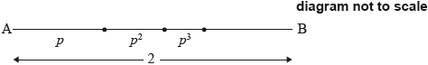
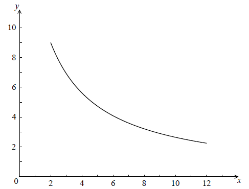

SL Paper 1
Find \({\log _2}32\) .
Given that \({\log _2}\left( {\frac{{{{32}^x}}}{{{8^y}}}} \right)\) can be written as \(px + qy\) , find the value of p and of q.
Markscheme
5 A1 N1
[1 mark]
METHOD 1
\({\log _2}\left( {\frac{{{{32}^x}}}{{{8^y}}}} \right) = {\log _2}{32^x} - {\log _2}{8^y}\) (A1)
\( = x{\log _2}32 - y{\log _2}8\) (A1)
\({\log _2}8 = 3\) (A1)
\(p = 5\) , \(q = - 3\) (accept \(5x - 3y\) ) A1 N3
METHOD 2
\(\frac{{{{32}^x}}}{{{8^y}}} = \frac{{{{({2^5})}^x}}}{{{{({2^3})}^y}}}\) (A1)
\( = \frac{{{2^5}^x}}{{{2^3}^y}}\) (A1)
\( = {2^{5x - 3y}}\) (A1)
\({\log _2}({2^{5x - 3y}}) = 5x - 3y\)
\(p = 5\) , \(q = - 3\) (accept \(5x - 3y\) ) A1 N3
[4 marks]
Examiners report
Part (a) proved very accessible.
Although many found part (b) accessible as well, a good number of candidates could not complete their way to a final result. Many gave q as a positive value.
Find the value of each of the following, giving your answer as an integer.
\({\log _6}36\)
\({\log _6}4 + {\log _6}9\)
\({\log _6}2 - {\log _6}12\)
Markscheme
correct approach (A1)
eg \({6^x} = 36,{\text{ }}{6^2}\)
\(2\) A1 N2
[2 marks]
correct simplification (A1)
eg \({\log _6}36,{\text{ }}\log (4 \times 9)\)
\(2\) A1 N2
[2 marks]
correct simplification (A1)
eg \({\log _6}\frac{2}{{12}},{\text{ }}\log (2 \div 12)\)
correct working (A1)
eg \({\log _6}\frac{1}{6},{\text{ }}{6^{ - 1}} = \frac{1}{6}{,6^x} = \frac{1}{6}\)
\(-1\) A1 N2
[3 marks]
Examiners report
Expand \({(2 + x)^4}\) and simplify your result.
Hence, find the term in \({x^2}\) in \({(2 + x)^4}\left( {1 + \frac{1}{{{x^2}}}} \right)\) .
Markscheme
evidence of expanding M1
e.g. \({2^4} + 4({2^3})x + 6({2^2}){x^2} + 4(2){x^3} + {x^4}\) , \((4 + 4x + {x^2})(4 + 4x + {x^2})\)
\({(2 + x)^4} = 16 + 32x + 24{x^2} + 8{x^3} + {x^4}\) A2 N2
[3 marks]
finding coefficients 24 and 1 (A1)(A1)
term is \(25{x^2}\) A1 N3
[3 marks]
Examiners report
Surprisingly few candidates employed the binomial theorem, choosing instead to expand by repeated use of the distributive property. This earned full marks if done correctly, but often proved prone to error.
Candidates often expanded the entire expression in part (b). Few recognized that only two distributions are required to answer the question. Some gave the coefficient as the final answer.
An arithmetic sequence has the first term \(\ln a\) and a common difference \(\ln 3\).
The 13th term in the sequence is \(8\ln 9\). Find the value of \(a\).
Markscheme
Note: There are many approaches to this question, and the steps may be done in any order. There are 3 relationships they may need to apply at some stage, for the 3rd, 4th and 5th marks. These are
equating bases eg recognising 9 is \({{\text{3}}^2}\)
log rules: \(\ln b + \ln c = \ln (bc),{\text{ }}\ln b - \ln c = \ln \left( {\frac{b}{c}} \right)\),
exponent rule: \(\ln {b^n} = n\ln b\).
The exception to the FT rule applies here, so that if they demonstrate correct application of the 3 relationships, they may be awarded the A marks, even if they have made a previous error. However all applications of a relationship need to be correct. Once an error has been made, do not award A1FT for their final answer, even if it follows from their working.
Please check working and award marks in line with the markscheme.
correct substitution into \({u_{13}}\) formula (A1)
eg\(\;\;\;\ln a + (13 - 1)\ln 3\)
set up equation for \({u_{13}}\) in any form (seen anywhere) (M1)
eg\(\;\;\;\ln a + 12\ln 3 = 8\ln 9\)
correct application of relationships (A1)(A1)(A1)
\(a = 81\) A1 N3
[6 marks]
Examples of application of relationships
Example 1
correct application of exponent rule for logs (A1)
eg\(\;\;\;\ln a + \ln {3^{12}} = \ln {9^8}\)
correct application of addition rule for logs (A1)
eg\(\;\;\;\ln (a{3^{12}}) = \ln {9^8}\)
substituting for 9 or 3 in ln expression in equation (A1)
eg\(\;\;\;\ln (a{3^{12}}) = \ln {3^{16}},{\text{ }}\ln (a{9^6}) = \ln {9^8}\)
Example 2
recognising \(9 = {3^2}\) (A1)
eg\(\;\;\;\ln a + 12\ln 3 = 8\ln {3^2},{\text{ }}\ln a + 12\ln {9^{\frac{1}{2}}} = 8\ln 9\)
one correct application of exponent rule for logs relating \(\ln 9\) to \(\ln 3\) (A1)
eg\(\;\;\;\ln a + 12\ln 3 = 16\ln 3,{\text{ }}\ln a + 6\ln 9 = 8\ln 9\)
another correct application of exponent rule for logs (A1)
eg\(\;\;\;\ln a = \ln {3^4},{\text{ }}\ln a = \ln {9^2}\)
Examiners report
Consider the following sequence of figures.

Figure 1 contains 5 line segments.
Given that Figure \(n\) contains 801 line segments, show that \(n = 200\).
Find the total number of line segments in the first 200 figures.
Markscheme
recognizing that it is an arithmetic sequence (M1)
eg\(\,\,\,\,\,\)\(5,{\text{ }}5 + 4,{\text{ }}5 + 4 + 4,{\text{ }} \ldots ,{\text{ }}d = 4,{\text{ }}{u_n} = {u_1} + (n - 1)d,{\text{ }}4n + 1\)
correct equation A1
eg\(\,\,\,\,\,\)\(5 + 4(n - 1) = 801\)
correct working (do not accept substituting \(n = 200\)) A1
eg\(\,\,\,\,\,\)\(4n - 4 = 796,{\text{ }}n - 1 = \frac{{796}}{4}\)
\(n = 200\) AG N0
[3 marks]
recognition of sum (M1)
eg\(\,\,\,\,\,\)\({S_{200}},{\text{ }}{u_1} + {u_2} + \ldots + {u_{200}},{\text{ }}5 + 9 + 13 + \ldots + 801\)
correct working for AP (A1)
eg\(\,\,\,\,\,\)\(\frac{{200}}{2}(5 + 801),{\text{ }}\frac{{200}}{2}{\text{ }}\left( {2(5) + 199(4)} \right)\)
\(80\,600\) A1 N2
[3 marks]
Examiners report
Most candidates recognized that the series was arithmetic but many worked backwards using \(n = 200\) rather than creating and solving an equation of their own to produce the given answer.
Almost all students answered (b) correctly.
Let \(f(x) = k{\log _2}x\) .
Given that \({f^{ - 1}}(1) = 8\) , find the value of \(k\) .
Find \({f^{ - 1}}\left( {\frac{2}{3}} \right)\) .
Markscheme
METHOD 1
recognizing that \(f(8) = 1\) (M1)
e.g. \(1 = k{\log _2}8\)
recognizing that \({\log _2}8 = 3\) (A1)
e.g. \(1 = 3k\)
\(k = \frac{1}{3}\) A1 N2
METHOD 2
attempt to find the inverse of \(f(x) = k{\log _2}x\) (M1)
e.g. \(x = k{\log _2}y\) , \(y = {2^{\frac{x}{k}}}\)
substituting 1 and 8 (M1)
e.g. \(1 = k{\log _2}8\) , \({2^{\frac{1}{k}}} = 8\)
\(k = \frac{1}{{{{\log }_2}8}}\) \(\left( {k = \frac{1}{3}} \right)\) A1 N2
[3 marks]
METHOD 1
recognizing that \(f(x) = \frac{2}{3}\) (M1)
e.g. \(\frac{2}{3} = \frac{1}{3}{\log _2}x\)
\({\log _2}x = 2\) (A1)
\({f^{ - 1}}\left( {\frac{2}{3}} \right) = 4\) (accept \(x = 4\)) A2 N3
METHOD 2
attempt to find inverse of \(f(x) = \frac{1}{3}{\log _2}x\) (M1)
e.g. interchanging x and y , substituting \(k = \frac{1}{3}\) into \(y = {2^{\frac{x}{k}}}\)
correct inverse (A1)
e.g. \({f^{ - 1}}(x) = {2^{3x}}\) , \({2^{3x}}\)
\({f^{ - 1}}\left( {\frac{2}{3}} \right) = 4\) A2 N3
[4 marks]
Examiners report
A very poorly done question. Most candidates attempted to find the inverse function for \(f\) and used that to answer parts (a) and (b). Few recognized that the explicit inverse function was not necessary to answer the question.
Although many candidates seem to know that they can find an inverse function by interchanging x and y, very few were able to actually get the correct inverse. Almost none recognized that if \({f^{ - 1}}(1) = 8\) , then \(f(8) = 1\) . Many thought that the letters "log" could be simply "cancelled out", leaving the \(2\) and the \(8\).
A very poorly done question. Most candidates attempted to find the inverse function for \(f\) and used that to answer parts (a) and (b). Few recognized that the explicit inverse function was not necessary to answer the question.
Although many candidates seem to know that they can find an inverse function by interchanging x and y, very few were able to actually get the correct inverse. Almost none recognized that if \({f^{ - 1}}(1) = 8\) , then \(f(8) = 1\) . Many thought that the letters "log" could be simply "cancelled out", leaving the \(2\) and the \(8\).
In an arithmetic sequence, the first term is 3 and the second term is 7.
Find the common difference.
Find the tenth term.
Find the sum of the first ten terms of the sequence.
Markscheme
attempt to subtract terms (M1)
eg\(\,\,\,\,\,\)\(d = {u_2} - {u_1},{\text{ }}7 - 3\)
\(d = 4\) A1 N2
[2 marks]
correct approach (A1)
eg\(\,\,\,\,\,\)\({u_{10}} = 3 + 9(4)\)
\({u_{10}} = 39\) A1 N2
[2 marks]
correct substitution into sum (A1)
eg\(\,\,\,\,\,\)\({S_{10}} = 5(3 + 39),{\text{ }}{S_{10}} = \frac{{10}}{2}(2 \times 3 + 9 \times 4)\)
\({S_{10}} = 210\) A1 N2
[2 marks]
Examiners report
The first three terms of a infinite geometric sequence are \(m - 1,{\text{ 6, }}m + 4\), where \(m \in \mathbb{Z}\).
Write down an expression for the common ratio, \(r\).
Hence, show that \(m\) satisfies the equation \({m^2} + 3m - 40 = 0\).
Find the two possible values of \(m\).
Find the possible values of \(r\).
The sequence has a finite sum.
State which value of \(r\) leads to this sum and justify your answer.
The sequence has a finite sum.
Calculate the sum of the sequence.
Markscheme
correct expression for \(r\) A1 N1
eg \(r = \frac{6}{{m - 1}},{\text{ }}\frac{{m + 4}}{6}\)
[2 marks]
correct equation A1
eg \(\frac{6}{{m - 1}} = \frac{{m + 4}}{6},{\text{ }}\frac{6}{{m + 4}} = \frac{{m - 1}}{6}\)
correct working (A1)
eg \((m + 4)(m - 1) = 36\)
correct working A1
eg \({m^2} - m + 4m - 4 = 36,{\text{ }}{m^2} + 3m - 4 = 36\)
\({m^2} + 3m - 40 = 0\) AG N0
[2 marks]
valid attempt to solve (M1)
eg \((m + 8)(m - 5) = 0,{\text{ }}m = \frac{{ - 3 \pm \sqrt {9 + 4 \times 40} }}{2}\)
\(m = - 8,{\text{ }}m = 5\) A1A1 N3
[3 marks]
attempt to substitute any value of \(m\) to find \(r\) (M1)
eg \(\frac{6}{{ - 8 - 1}},{\text{ }}\frac{{5 + 4}}{6}\)
\(r = \frac{3}{2},{\text{ }}r = - \frac{2}{3}\) A1A1 N3
[3 marks]
\(r = - \frac{2}{3}\) (may be seen in justification) A1
valid reason R1 N0
eg \(\left| r \right| < 1,{\text{ }} - 1 < \frac{{ - 2}}{3} < 1\)
Notes: Award R1 for \(\left| r \right| < 1\) only if A1 awarded.
[2 marks]
finding the first term of the sequence which has \(\left| r \right| < 1\) (A1)
eg \( - 8 - 1,{\text{ }}6 \div \frac{{ - 2}}{3}\)
\({u_1} = - 9\) (may be seen in formula) (A1)
correct substitution of \({u_1}\) and their \(r\) into \(\frac{{{u_1}}}{{1 - r}}\), as long as \(\left| r \right| < 1\) A1
eg \({S_\infty } = \frac{{ - 9}}{{1 - \left( { - \frac{2}{3}} \right)}},{\text{ }}\frac{{ - 9}}{{\frac{5}{3}}}\)
\({S_\infty } = - \frac{{27}}{5}{\text{ }}( = - 5.4)\) A1 N3
[4 marks]
Examiners report
In an arithmetic sequence, the first term is \(2\) and the second term is \(5\).
Find the common difference.
Find the eighth term.
Find the sum of the first eight terms of the sequence.
Markscheme
correct approach (A1)
eg\(\;\;\;d = {u_2} - {u_1},{\text{ }}5 - 2\)
\(d = 3\) A1 N2
[2 marks]
correct approach (A1)
eg\(\;\;\;{u_8} = 2 + 7 \times 3\), listing terms
\({u_8} = 23\) A1 N2
[2 marks]
correct approach (A1)
eg\(\;\;\;{S_8} = \frac{8}{2}(2 + 23)\), listing terms, \(\frac{8}{2}\left( {2(2) + 7(3)} \right)\)
\({S_8} = 100\) A1 N2
[2 marks]
Total [6 marks]
Examiners report
All three parts of this question were very well done by the candidates. The occasional mistakes that were seen tended to be arithmetic errors which happened after the candidates had substituted correctly into the formulas given in the formula booklet.
All three parts of this question were very well done by the candidates. The occasional mistakes that were seen tended to be arithmetic errors which happened after the candidates had substituted correctly into the formulas given in the formula booklet.
All three parts of this question were very well done by the candidates. The occasional mistakes that were seen tended to be arithmetic errors which happened after the candidates had substituted correctly into the formulas given in the formula booklet.
Write the expression \(3\ln 2 - \ln 4\) in the form \(\ln k\), where \(k \in \mathbb{Z}\).
Hence or otherwise, solve \(3\ln 2 - \ln 4 = - \ln x\).
Markscheme
correct application of \(\ln {a^b} = b\ln a\) (seen anywhere) (A1)
eg\(\;\;\;\ln 4 = 2\ln 2,{\text{ }}3\ln 2 = \ln {2^3},{\text{ }}3\log 2 = \log 8\)
correct working (A1)
eg\(\;\;\;3\ln 2 - 2\ln 2,{\text{ }}\ln 8 - \ln 4\)
\(\ln 2\;\;\;{\text{(accept }}k = 2{\text{)}}\) A1 N2
[3 marks]
METHOD 1
attempt to substitute their answer into the equation (M1)
eg\(\;\;\;\ln 2 = - \ln x\)
correct application of a log rule (A1)
eg\(\;\;\;\ln \frac{1}{x},{\text{ }}\ln \frac{1}{2} = \ln x,{\text{ }}\ln 2 + \ln x = \ln 2x\;\;\;( = 0)\)
\(x = \frac{1}{2}\) A1 N2
METHOD 2
attempt to rearrange equation, with \(3\ln 2\) written as \(\ln {2^3}\) or \(\ln 8\) (M1)
eg\(\;\;\;\ln x = \ln 4 - \ln {2^3},{\text{ }}\ln 8 + \ln x = \ln 4,{\text{ }}\ln {2^3} = \ln 4 - \ln x\)
correct working applying \(\ln a \pm \ln b\) (A1)
eg\(\;\;\;\frac{4}{8},{\text{ }}8x = 4,{\text{ }}\ln {2^3} = \ln \frac{4}{x}\)
\(x = \frac{1}{2}\) A1 N2
[3 marks]
Total [6 marks]
Examiners report
Part (a) was answered correctly by a large number of candidates, though there were quite a few who applied the rules of logarithms in the wrong order.
In part (b), many candidates knew to set their answer from part (a) equal to \( - \ln x\), but then a good number incorrectly said that \(\ln 2 = - \ln x\) led to \(2 = - x\).
The sums of the terms of a sequence follow the pattern
\({S_1} = 1 + k,{\text{ }}{S_2} = 5 + 3k,{\text{ }}{S_3} = 12 + 7k,{\text{ }}{S_4} = 22 + 15k,{\text{ }} \ldots ,{\text{ where }}k \in \mathbb{Z}.\)
Given that \({u_1} = 1 + k\), find \({u_2},{\text{ }}{u_3}\) and \({u_4}\).
Find a general expression for \({u_n}\).
Markscheme
valid method (M1)
eg \({u_2} = {S_2} - {S_1},{\text{ }}1 + k + {u_2} = 5 + 3k\)
\({u_2} = 4 + 2k,{\text{ }}{u_3} = 7 + 4k,{\text{ }}{u_4} = 10 + 8k\) A1A1A1 N4
[4 marks]
correct AP or GP (A1)
eg finding common difference is \(3\), common ratio is \(2\)
valid approach using arithmetic and geometric formulas (M1)
eg \(1 + 3(n - 1)\) and \({r^{n - 1}}k\)
\({u_n} = 3n - 2 + {2^{n - 1}}k\) A1A1 N4
Note: Award A1 for \(3n - 2\), A1 for \({2^{n - 1}}k\).
[4 marks]
Examiners report
Consider the arithmetic sequence \(2{\text{, }}5{\text{, }}8{\text{, }}11{\text{,}} \ldots \) .
Find \({u_{101}}\) .
Consider the arithmetic sequence \(2{\text{, }}5{\text{, }}8{\text{, }}11{\text{,}} \ldots \) .
Find the value of n so that \({u_n} = 152\) .
Markscheme
\(d = 3\) (A1)
evidence of substitution into \({u_n} = a + (n - 1)d\) (M1)
e.g. \({u_{101}} = 2 + 100 \times 3\)
\({u_{101}} = 302\) A1 N3
[3 marks]
correct approach (M1)
e.g. \(152 = 2 + (n - 1) \times 3\)
correct simplification (A1)
e.g. \(150 = (n - 1) \times 3\) , \(50 = n - 1\) , \(152 = - 1 + 3n\)
\(n = 51\) A1 N2
[3 marks]
Examiners report
Candidates probably had the most success with this question with many good solutions which were written with the working clearly shown. Many used the alternate approach of \({u_n} = 3n - 1\) .
Candidates probably had the most success with this question with many good solutions which were written with the working clearly shown. Many used the alternate approach of \({u_n} = 3n - 1\) .
The first two terms of an infinite geometric sequence, in order, are
\(2{\log _2}x,{\text{ }}{\log _2}x\), where \(x > 0\).
The first three terms of an arithmetic sequence, in order, are
\({\log _2}x,{\text{ }}{\log _2}\left( {\frac{x}{2}} \right),{\text{ }}{\log _2}\left( {\frac{x}{4}} \right)\), where \(x > 0\).
Let \({S_{12}}\) be the sum of the first 12 terms of the arithmetic sequence.
Find \(r\).
Show that the sum of the infinite sequence is \(4{\log _2}x\).
Find \(d\), giving your answer as an integer.
Show that \({S_{12}} = 12{\log _2}x - 66\).
Given that \({S_{12}}\) is equal to half the sum of the infinite geometric sequence, find \(x\), giving your answer in the form \({2^p}\), where \(p \in \mathbb{Q}\).
Markscheme
evidence of dividing terms (in any order) (M1)
eg\(\,\,\,\,\,\)\(\frac{{{\mu _2}}}{{{\mu _1}}},{\text{ }}\frac{{2{{\log }_2}x}}{{{{\log }_2}x}}\)
\(r = \frac{1}{2}\) A1 N2
[2 marks]
correct substitution (A1)
eg\(\,\,\,\,\,\)\(\frac{{2{{\log }_2}x}}{{1 - \frac{1}{2}}}\)
correct working A1
eg\(\,\,\,\,\,\)\(\frac{{2{{\log }_2}x}}{{\frac{1}{2}}}\)
\({S_\infty } = 4{\log _2}x\) AG N0
[2 marks]
evidence of subtracting two terms (in any order) (M1)
eg\(\,\,\,\,\,\)\({u_3} - {u_2},{\text{ }}{\log _2}x - {\log _2}\frac{x}{2}\)
correct application of the properties of logs (A1)
eg\(\,\,\,\,\,\)\({\log _2}\left( {\frac{{\frac{x}{2}}}{x}} \right),{\text{ }}{\log _2}\left( {\frac{x}{2} \times \frac{1}{x}} \right),{\text{ }}({\log _2}x - {\log _2}2) - {\log _2}x\)
correct working (A1)
eg\(\,\,\,\,\,\)\({\log _2}\frac{1}{2},{\text{ }} - {\log _2}2\)
\(d = - 1\) A1 N3
[4 marks]
correct substitution into the formula for the sum of an arithmetic sequence (A1)
eg\(\,\,\,\,\,\)\(\frac{{12}}{2}\left( {2{{\log }_2}x + (12 - 1)( - 1)} \right)\)
correct working A1
eg\(\,\,\,\,\,\)\(6(2{\log _2}x - 11),{\text{ }}\frac{{12}}{2}(2{\log _2}x - 11)\)
\(12{\log _2}x - 66\) AG N0
[2 marks]
correct equation (A1)
eg\(\,\,\,\,\,\)\(12{\log _2}x - 66 = 2{\log _2}x\)
correct working (A1)
eg\(\,\,\,\,\,\)\(10{\log _2}x = 66,{\text{ }}{\log _2}x = 6.6,{\text{ }}{2^{66}} = {x^{10}},{\text{ }}{\log _2}\left( {\frac{{{x^{12}}}}{{{x^2}}}} \right) = 66\)
\(x = {2^{6.6}}\) (accept \(p = \frac{{66}}{{10}}\)) A1 N2
[3 marks]
Examiners report
The fifth term in the expansion of the binomial \({(a + b)^n}\) is given by \(\left( {\begin{array}{*{20}{c}}
{10}\\
4
\end{array}} \right){p^6}{(2q)^4}\) .
Write down the value of \(n\).
Write down a and b, in terms of p and/or q.
Write down an expression for the sixth term in the expansion.
Markscheme
\(n = 10\) A1 N1
[1 mark]
\(a = p\) , \(b = 2q\) (or \(a = 2q\) , \(b = p\) ) A1A1 N1N1
[2 marks]
\(\left( {\begin{array}{*{20}{c}}
{10}\\
5
\end{array}} \right){p^5}{(2q)^5}\) A1A1A1 N3
[3 marks]
Examiners report
The most common error was in (c) where many candidates interpreted the "sixth" term as using \(\left( {\begin{array}{*{20}{c}}
{10}\\
6
\end{array}} \right)\) , with accompanying powers of 4 and 6 in the expression.
An arithmetic sequence has \({u_1} = {\text{lo}}{{\text{g}}_c}\left( p \right)\) and \({u_2} = {\text{lo}}{{\text{g}}_c}\left( {pq} \right)\), where \(c > 1\) and \(p,\,\,q > 0\).
Show that \(d = {\text{lo}}{{\text{g}}_c}\left( q \right)\).
Let \(p = {c^2}\) and \(q = {c^3}\). Find the value of \(\sum\limits_{n = 1}^{20} {{u_n}} \).
Markscheme
valid approach involving addition or subtraction M1
eg \({u_2} = {\text{lo}}{{\text{g}}_c}\,p + d,\,\,{u_1} - {u_2}\)
correct application of log law A1
eg \({\text{lo}}{{\text{g}}_c}\left( {pq} \right) = {\text{lo}}{{\text{g}}_c}\,p + {\text{lo}}{{\text{g}}_c}\,q,\,\,{\text{lo}}{{\text{g}}_c}\left( {\frac{{pq}}{p}} \right)\)
\(d = {\text{lo}}{{\text{g}}_c}\,q\) AG N0
[2 marks]
METHOD 1 (finding \({u_1}\) and d)
recognizing \(\sum { = {S_{20}}} \) (seen anywhere) (A1)
attempt to find \({u_1}\) or d using \({\text{lo}}{{\text{g}}_c}\,{c^k} = k\) (M1)
eg \({\text{lo}}{{\text{g}}_c}\,c\), \({\text{3}}\,{\text{lo}}{{\text{g}}_c}\,c\), correct value of \({u_1}\) or d
\({u_1}\) = 2, d = 3 (seen anywhere) (A1)(A1)
correct working (A1)
eg \({S_{20}} = \frac{{20}}{2}\left( {2 \times 2 + 19 \times 3} \right),\,\,{S_{20}} = \frac{{20}}{2}\left( {2 + 59} \right),\,\,10\left( {61} \right)\)
\(\sum\limits_{n = 1}^{20} {{u_n}} \) = 610 A1 N2
METHOD 2 (expressing S in terms of c)
recognizing \(\sum { = {S_{20}}} \) (seen anywhere) (A1)
correct expression for S in terms of c (A1)
eg \(10\left( {2\,{\text{lo}}{{\text{g}}_c}\,{c^2} + 19\,{\text{lo}}{{\text{g}}_c}\,{c^3}} \right)\)
\({\text{lo}}{{\text{g}}_c}\,{c^2} = 2,\,\,\,{\text{lo}}{{\text{g}}_c}\,{c^3} = 3\) (seen anywhere) (A1)(A1)
correct working (A1)
eg \({S_{20}} = \frac{{20}}{2}\left( {2 \times 2 + 19 \times 3} \right),\,\,{S_{20}} = \frac{{20}}{2}\left( {2 + 59} \right),\,\,10\left( {61} \right)\)
\(\sum\limits_{n = 1}^{20} {{u_n}} \) = 610 A1 N2
METHOD 3 (expressing S in terms of c)
recognizing \(\sum { = {S_{20}}} \) (seen anywhere) (A1)
correct expression for S in terms of c (A1)
eg \(10\left( {2\,{\text{lo}}{{\text{g}}_c}\,{c^2} + 19\,{\text{lo}}{{\text{g}}_c}\,{c^3}} \right)\)
correct application of log law (A1)
eg \(2\,{\text{lo}}{{\text{g}}_c}\,{c^2} = \,\,{\text{lo}}{{\text{g}}_c}\,{c^4},\,\,19\,{\text{lo}}{{\text{g}}_c}\,{c^3} = \,\,{\text{lo}}{{\text{g}}_c}\,{c^{57}},\,\,10\,\left( {{\text{lo}}{{\text{g}}_c}\,{{\left( {{c^2}} \right)}^2} + \,\,{\text{lo}}{{\text{g}}_c}\,{{\left( {{c^3}} \right)}^{19}}} \right),\,\,10\,\left( {{\text{lo}}{{\text{g}}_c}\,{c^4} + \,{\text{lo}}{{\text{g}}_c}\,{c^{57}}} \right),\,\,10\left( {{\text{lo}}{{\text{g}}_c}\,{c^{61}}} \right)\)
correct application of definition of log (A1)
eg \({\text{lo}}{{\text{g}}_c}\,{c^{61}} = 61,\,\,{\text{lo}}{{\text{g}}_c}\,{c^4} = 4,\,\,{\text{lo}}{{\text{g}}_c}\,{c^{57}} = 57\)
correct working (A1)
eg \({S_{20}} = \frac{{20}}{2}\left( {4 + 57} \right),\,\,10\left( {61} \right)\)
\(\sum\limits_{n = 1}^{20} {{u_n}} \) = 610 A1 N2
[6 marks]
Examiners report
In an arithmetic sequence, the third term is 10 and the fifth term is 16.
Find the common difference.
Find the first term.
Find the sum of the first 20 terms of the sequence.
Markscheme
attempt to find \(d\) (M1)
eg \(\frac{{16 - 10}}{2}{\text{, }}10 - 2d = 16 - 4d{\text{, }}2d = 6{\text{, }}d = 6\)
\(d = 3\) A1 N2
[2 marks]
correct approach (A1)
eg \(10 = {u_1} + 2 \times 3{\text{, }}10 - 3 - 3\)
\({u_1} = 4\) A1 N2
[2 marks]
correct substitution into sum or term formula (A1)
eg \(\frac{{20}}{2}(2 \times 4 + 19 \times 3){\text{, }}{u_{20}} = 4 + 19 \times 3\)
correct simplification (A1)
eg \(8 + 57{\text{, }}4 + 61\)
\({S_{20}} = 650\) A1 N2
[3 marks]
Examiners report
Consider the infinite geometric sequence \(3{\text{, }}3(0.9){\text{, }}3{(0.9)^2}{\text{, }}3{(0.9)^3}{\text{, }} \ldots \) .
Write down the 10th term of the sequence. Do not simplify your answer.
Consider the infinite geometric sequence \(3{\text{, }}3(0.9){\text{, }}3{(0.9)^2}{\text{, }}3{(0.9)^3}{\text{, }} \ldots \) .
Find the sum of the infinite sequence.
Markscheme
\({u_{10}} = 3{(0.9)^9}\) A1 N1
[1 mark]
recognizing \(r = 0.9\) (A1)
correct substitution A1
e.g. \(S = \frac{3}{{1 - 0.9}}\)
\(S = \frac{3}{{0.1}}\) (A1)
\(S = 30\) A1 N3
[4 marks]
Examiners report
This question was well done by most candidates. There were a surprising number of candidates who lost a mark for not simplifying \(\frac{3}{{0.1}}\) to 30 , and there were a few candidates who used the formula for the finite sum unsuccessfully.
This question was well done by most candidates. There were a surprising number of candidates who lost a mark for not simplifying \(\frac{3}{{0.1}}\) to 30, and there were a few candidates who used the formula for the finite sum unsuccessfully.
Let \(f(x) = lo{g_3}\sqrt x \) , for \(x > 0\) .
Show that \({f^{ - 1}}(x) = {3^{2x}}\) .
Write down the range of \({f^{ - 1}}\) .
Let \(g(x) = {\log _3}x\) , for \(x > 0\) .
Find the value of \(({f^{ - 1}} \circ g)(2)\) , giving your answer as an integer.
Markscheme
interchanging x and y (seen anywhere) (M1)
e.g. \(x = \log \sqrt y \) (accept any base)
evidence of correct manipulation A1
e.g. \(3^x = \sqrt y \) , \({3^y} = {x^{\frac{1}{2}}}\) , \(x = \frac{1}{2}{\log _3}y\) , \(2y = {\log _3}x\)
\({f^{ - 1}}(x) = {3^{2x}}\) AG N0
[2 marks]
\(y > 0\) , \({f^{ - 1}}(x) > 0\) A1 N1
[1 mark]
METHOD 1
finding \(g(2) = lo{g_3}2\) (seen anywhere) A1
attempt to substitute (M1)
e.g. \(({f^{ - 1}} \circ g)(2) = {3^{2\log {_3}2}}\)
evidence of using log or index rule (A1)
e.g. \(({f^{ - 1}} \circ g)(2) = {3^{\log {_3}4}}\) , \({3^{{{\log }_3}2^2}}\)
\(({f^{ - 1}} \circ g)(2) = 4\) A1 N1
METHOD 2
attempt to form composite (in any order) (M1)
e.g. \(({f^{ - 1}} \circ g)(x) = {3^{2{{\log }_3}x}}\)
evidence of using log or index rule (A1)
e.g. \(({f^{ - 1}} \circ g)(x) = {3^{{{\log }_3}{x^2}}}\) , \({3^{{{\log }_3}{x^{}}}}^2\)
\(({f^{ - 1}} \circ g)(x) = {x^2}\) A1
\(({f^{ - 1}} \circ g)(2) = 4\) A1 N1
[4 marks]
Examiners report
Candidates were generally skilled at finding the inverse of a logarithmic function.
Few correctly gave the range of this function, often stating “all real numbers” or “ \(y \ge 0\) ”, missing the idea that the range of an inverse is the domain of the original function.
Some candidates answered part (c) correctly, although many did not get beyond \({3^{2{{\log }_3}2}}\) . Some attempted to form the composite in the incorrect order. Others interpreted \(({f^{ - 1}} \circ g)(2)\) as multiplication by 2.
The first three terms of an infinite geometric sequence are 32, 16 and 8.
Write down the value of r .
Find \({u_6}\) .
Find the sum to infinity of this sequence.
Markscheme
\(r = \frac{{16}}{{32}}\left( { = \frac{1}{2}} \right)\) A1 N1
[1 mark]
correct calculation or listing terms (A1)
e.g. \(32 \times {\left( {\frac{1}{2}} \right)^{6 - 1}}\) , \(8 \times {\left( {\frac{1}{2}} \right)^3}\) , 32, \(\ldots \) 4, 2, 1
\({u_6} = 1\) A1 N2
[2 marks]
evidence of correct substitution in \({S_\infty }\) A1
e.g. \(\frac{{32}}{{1 - \frac{1}{2}}}\) , \(\frac{{32}}{{\frac{1}{2}}}\)
\({S_\infty } = 64\) A1 N1
[2 marks]
Examiners report
This question was very well done by the majority of candidates. There were some who used a value of r greater than one, with the most common error being \(r = 2\) .
This question was very well done by the majority of candidates. There were some who used a value of r greater than one, with the most common error being \(r = 2\) .
A handful of candidates struggled with the basic computation involved in part (c).
The first two terms of an infinite geometric sequence are u1 = 18 and u2 = 12sin2 θ , where 0 < θ < 2\(\pi \) , and θ ≠ \(\pi \).
Find an expression for r in terms of θ.
Find the possible values of r.
Show that the sum of the infinite sequence is \(\frac{{54}}{{2 + {\text{cos}}\,\left( {2\theta } \right)}}\).
Find the values of θ which give the greatest value of the sum.
Markscheme
valid approach (M1)
eg \(\frac{{{u_2}}}{{{u_1}}},\,\,\frac{{{u_1}}}{{{u_2}}}\)
\(r = \frac{{12\,{{\sin }^2}\,\theta }}{{18}}\left( { = \frac{{2\,{{\sin }^2}\,\theta }}{3}} \right)\) A1 N2
[2 marks]
recognizing that sinθ is bounded (M1)
eg 0 ≤ sin2 θ ≤ 1, −1 ≤ sinθ ≤ 1, −1 < sinθ < 1
0 < r ≤ \(\frac{2}{3}\) A2 N3
Note: If working shown, award M1A1 for correct values with incorrect inequality sign(s).
If no working shown, award N1 for correct values with incorrect inequality sign(s).
[3 marks]
correct substitution into formula for infinite sum A1
eg \(\frac{{18}}{{1 - \frac{{2\,{\text{si}}{{\text{n}}^2}\,\theta }}{3}}}\)
evidence of choosing an appropriate rule for cos 2θ (seen anywhere) (M1)
eg cos 2θ = 1 − 2 sin2 θ
correct substitution of identity/working (seen anywhere) (A1)
eg \(\frac{{18}}{{1 - \frac{2}{3}\left( {\frac{{1 - {\text{cos}}\,2\theta }}{2}} \right)}},\,\,\frac{{54}}{{3 - 2\left( {\frac{{1 - {\text{cos}}\,2\theta }}{2}} \right)}},\,\,\frac{{18}}{{\frac{{3 - 2\,{\text{si}}{{\text{n}}^2}\,\theta }}{3}}}\)
correct working that clearly leads to the given answer A1
eg \(\frac{{18 \times 3}}{{2 + \left( {1 - 2\,{\text{si}}{{\text{n}}^2}\,\theta } \right)}},\,\,\frac{{54}}{{3 - \left( {1 - {\text{cos}}\,2\theta } \right)}}\)
\(\frac{{54}}{{2 + {\text{cos}}\left( {2\theta } \right)}}\) AG N0
[4 marks]
METHOD 1 (using differentiation)
recognizing \(\frac{{{\text{d}}{S_\infty }}}{{{\text{d}}\theta }} = 0\) (seen anywhere) (M1)
finding any correct expression for \(\frac{{{\text{d}}{S_\infty }}}{{{\text{d}}\theta }}\) (A1)
eg \(\frac{{0 - 54 \times \left( { - 2\,{\text{sin}}\,2\,\theta } \right)}}{{{{\left( {2 + {\text{cos}}\,2\,\theta } \right)}^2}}},\,\, - 54{\left( {2 + {\text{cos}}\,2\,\theta } \right)^{ - 2}}\,\left( { - 2\,{\text{sin}}\,2\,\theta } \right)\)
correct working (A1)
eg sin 2θ = 0
any correct value for sin−1(0) (seen anywhere) (A1)
eg 0, \(\pi \), … , sketch of sine curve with x-intercept(s) marked both correct values for 2θ (ignore additional values) (A1)
2θ = \(\pi \), 3\(\pi \) (accept values in degrees)
both correct answers \(\theta = \frac{\pi }{2},\,\frac{{3\pi }}{2}\) A1 N4
Note: Award A0 if either or both correct answers are given in degrees.
Award A0 if additional values are given.
METHOD 2 (using denominator)
recognizing when S∞ is greatest (M1)
eg 2 + cos 2θ is a minimum, 1−r is smallest
correct working (A1)
eg minimum value of 2 + cos 2θ is 1, minimum r = \(\frac{2}{3}\)
correct working (A1)
eg \({\text{cos}}\,2\,\theta = - 1,\,\,\frac{2}{3}\,{\text{si}}{{\text{n}}^2}\,\theta = \frac{2}{3},\,\,{\text{si}}{{\text{n}}^2}\theta = 1\)
EITHER (using cos 2θ)
any correct value for cos−1(−1) (seen anywhere) (A1)
eg \(\pi \), 3\(\pi \), … (accept values in degrees), sketch of cosine curve with x-intercept(s) marked
both correct values for 2θ (ignore additional values) (A1)
2θ = \(\pi \), 3\(\pi \) (accept values in degrees)
OR (using sinθ)
sinθ = ±1 (A1)
sin−1(1) = \(\frac{\pi }{2}\) (accept values in degrees) (seen anywhere) A1
THEN
both correct answers \(\theta = \frac{\pi }{2},\,\frac{{3\pi }}{2}\) A1 N4
Note: Award A0 if either or both correct answers are given in degrees.
Award A0 if additional values are given.
[6 marks]
Examiners report
Three consecutive terms of a geometric sequence are \(x - 3\), 6 and \(x + 2\).
Find the possible values of \(x\).
Markscheme
METHOD 1
valid approach (M1)
eg\(\,\,\,\,\,\)\(r = \frac{6}{{x - 3}},{\text{ }}(x - 3) \times r = 6,{\text{ }}(x - 3){r^2} = x + 2\)
correct equation in terms of \(x\) only A1
eg\(\,\,\,\,\,\)\(\frac{6}{{x - 3}} = \frac{{x + 2}}{6},{\text{ }}(x - 3)(x + 2) = {6^2},{\text{ }}36 = {x^2} - x - 6\)
correct working (A1)
eg\(\,\,\,\,\,\)\({x^2} - x - 42,{\text{ }}{x^2} - x = 42\)
valid attempt to solve their quadratic equation (M1)
eg\(\,\,\,\,\,\)factorizing, formula, completing the square
evidence of correct working (A1)
eg\(\,\,\,\,\,\)\((x - 7)(x + 6),{\text{ }}\frac{{1 \pm \sqrt {169} }}{2}\)
\(x = 7,{\text{ }}x = - 6\) A1 N4
METHOD 2 (finding r first)
valid approach (M1)
eg\(\,\,\,\,\,\)\(r = \frac{6}{{x - 3}},{\text{ }}6r = x + 2,{\text{ }}(x - 3){r^2} = x + 2\)
correct equation in terms of \(r\) only A1
eg\(\,\,\,\,\,\)\(\frac{6}{r} + 3 = 6r - 2,{\text{ }}6 + 3r = 6{r^2} - 2r,{\text{ }}6{r^2} - 5r - 6 = 0\)
evidence of correct working (A1)
eg\(\,\,\,\,\,\)\((3r + 2)(2r - 3),{\text{ }}\frac{{5 \pm \sqrt {25 + 144} }}{{12}}\)
\(r = - \frac{2}{3},{\text{ }}r = \frac{3}{2}\) A1
substituting their values of \(r\) to find \(x\) (M1)
eg\(\,\,\,\,\,\)\((x - 3)\left( {\frac{2}{3}} \right) = 6,{\text{ }}x = 6\left( {\frac{3}{2}} \right) - 2\)
\(x = 7,{\text{ }}x = - 6\) A1 N4
[6 marks]
Examiners report
Nearly all candidates attempted to set up an expression, or pair of expressions, for the common ratio of the geometric sequence. When done correctly, these expressions led to a quadratic equation which was solved correctly by many candidates.
The values in the fourth row of Pascal’s triangle are shown in the following table.

Write down the values in the fifth row of Pascal’s triangle.
Hence or otherwise, find the term in \({x^3}\) in the expansion of \({(2x + 3)^5}\).
Markscheme
1, 5, 10, 10, 5, 1 A2 N2
[2 marks]
evidence of binomial expansion with binomial coefficient (M1)
eg\(\,\,\,\,\,\)\(\left( {\begin{array}{*{20}{c}} n \\ r \end{array}} \right){a^{n - r}}{b^r}\), selecting correct term, \({(2x)^5}{(3)^0} + 5{(2x)^4}{(3)^1} + 10{(2x)^3}{(3)^2} + \ldots \)
correct substitution into correct term (A1)(A1)(A1)
eg\(\,\,\,\,\,\)\(10{(2)^3}{(3)^2},{\text{ }}\left( {\begin{array}{*{20}{c}} 5 \\ 3 \end{array}} \right){(2x)^3}{(3)^2}\)
Note: Award A1 for each factor.
\(720{x^3}\) A1 N2
Notes: Do not award any marks if there is clear evidence of adding instead of multiplying.
Do not award final A1 for a final answer of 720, even if \(720{x^3}\) is seen previously.
[5 marks]
Examiners report
The sides of a square are 16 cm in length. The midpoints of the sides of this square are joined to form a new square and four triangles (diagram 1). The process is repeated twice, as shown in diagrams 2 and 3.

Let \({x_n}\) denote the length of one of the equal sides of each new triangle.
Let \({A_n}\) denote the area of each new triangle.
The following table gives the values of \({x_n}\) and \({A_n}\), for \(1 \leqslant n \leqslant 3\). Copy and complete the table. (Do not write on this page.)
| \(n\) | 1 | 2 | 3 |
| \({x_n}\) | 8 | 4 | |
| \({A_n}\) | 32 | 16 |
The process described above is repeated. Find \({A_6}\).
Consider an initial square of side length \(k {\text{ cm}}\). The process described above is repeated indefinitely. The total area of the shaded regions is \(k {\text{ c}}{{\text{m}}^2}\). Find the value of \(k\).
Markscheme
valid method for finding side length (M1)
eg \({8^2} + {8^2} = {c^2},{\text{ }}45 - 45 - 90{\text{ side ratios, }}8\sqrt 2 ,{\text{ }}\frac{1}{2}{s^2} = 16,{\text{ }}{x^2} + {x^2} = {8^2}\)
correct working for area (A1)
eg \(\frac{1}{2} \times 4 \times 4\)
| \(n\) | 1 | 2 | 3 |
| \({x_n}\) | 8 | \(\sqrt {32}\) | 4 |
| \({A_n}\) | 32 | 16 | 8 |
A1A1 N2N2
[4 marks]
METHOD 1
recognize geometric progression for \({A_n}\) (R1)
eg \({u_n} = {u_1}{r^{n - 1}}\)
\(r = \frac{1}{2}\) (A1)
correct working (A1)
eg \(32{\left( {\frac{1}{2}} \right)^5};{\text{ 4, 2, 1, }}\frac{1}{2},{\text{ }}\frac{1}{4},{\text{ }} \ldots \)
\({A_6} = 1\) A1 N3
METHOD 2
attempt to find \({x_6}\) (M1)
eg \(8{\left( {\frac{1}{{\sqrt 2 }}} \right)^5},{\text{ }}2\sqrt 2 ,{\text{ 2, }}\sqrt 2 ,{\text{ 1, }} \ldots \)
\({x_6} = \sqrt 2 \) (A1)
correct working (A1)
eg \(\frac{1}{2}{\left( {\sqrt 2 } \right)^2}\)
\({A_6} = 1\) A1 N3
[4 marks]
METHOD 1
recognize infinite geometric series (R1)
eg \({S_n} = \frac{a}{{1 - r}},{\text{ }}\left| r \right| < 1\)
area of first triangle in terms of \(k\) (A1)
eg \(\frac{1}{2}{\left( {\frac{k}{2}} \right)^2}\)
attempt to substitute into sum of infinite geometric series (must have \(k\)) (M1)
eg \(\frac{{\frac{1}{2}{{\left( {\frac{k}{2}} \right)}^2}}}{{1 - \frac{1}{2}}},{\text{ }}\frac{k}{{1 - \frac{1}{2}}}\)
correct equation A1
eg \(\frac{{\frac{1}{2}{{\left( {\frac{k}{2}} \right)}^2}}}{{1 - \frac{1}{2}}} = k,{\text{ }}k = \frac{{\frac{{{k^2}}}{8}}}{{\frac{1}{2}}}\)
correct working (A1)
eg \({k^2} = 4k\)
valid attempt to solve their quadratic (M1)
eg \(k(k - 4),{\text{ }}k = 4{\text{ or }}k = 0\)
\(k = 4\) A1 N2
METHOD 2
recognizing that there are four sets of infinitely shaded regions with equal area R1
area of original square is \({k^2}\) (A1)
so total shaded area is \(\frac{{{k^2}}}{4}\) (A1)
correct equation \(\frac{{{k^2}}}{4} = k\) A1
\({k^2} = 4k\) (A1)
valid attempt to solve their quadratic (M1)
eg \(k(k - 4),{\text{ }}k = 4{\text{ or }}k = 0\)
\(k = 4\) A1 N2
[7 marks]
Examiners report
Find the value of \({\log _2}40 - {\log _2}5\) .
Find the value of \({8^{{{\log }_2}5}}\) .
Markscheme
evidence of correct formula (M1)
eg \(\log a - \log b = \log \frac{a}{b}\) , \(\log \left( {\frac{{40}}{5}} \right)\) , \(\log 8 + \log 5 - \log 5\)
Note: Ignore missing or incorrect base.
correct working (A1)
eg \({\log _2}8\) , \({2^3} = 8\)
\({\log _2}40 - {\log _2}5 = 3\) A1 N2
[3 marks]
attempt to write \(8\) as a power of \(2\) (seen anywhere) (M1)
eg \({({2^3})^{{{\log }_2}5}}\) , \({2^3} = 8\) , \({2^a}\)
multiplying powers (M1)
eg \({2^{3{{\log }_2}5}}\) , \(a{\log _2}5\)
correct working (A1)
eg \({2^{{{\log }_2}125}}\) , \({\log _2}{5^3}\) , \({\left( {{2^{{{\log }_2}5}}} \right)^3}\)
\({8^{{{\log }_2}5}} = 125\) A1 N3
[4 marks]
Examiners report
Many candidates readily earned marks in part (a). Some interpreted \({\log _2}40 - {\log _2}5\) to mean \(\frac{{{{\log }_2}40}}{{{{\log }_2}5}}\) , an error which led to no further marks. Others left the answer as \({\log _2}5\) where an integer answer is expected.
Part (b) proved challenging for most candidates, with few recognizing that changing \(8\) to base \(2\) is a helpful move. Some made it as far as \({2^{3{{\log }_2}5}}\) yet could not make that final leap to an integer.
Given that \({2^m} = 8\) and \({2^n} = 16\), write down the value of \(m\) and of \(n\).
Hence or otherwise solve \({8^{2x + 1}} = {16^{2x - 3}}\).
Markscheme
\(m = 3,{\text{ }}n = 4\) A1A1 N2
[2 marks]
attempt to apply \({({2^a})^b} = {2^{ab}}\) (M1)
eg\(\;\;\;6x + 3,{\text{ }}4(2x - 3)\)
equating their powers of \(2\) (seen anywhere) M1
eg\(\;\;\;3(2x + 1) = 8x - 12\)
correct working A1
eg\(\;\;\;8x - 12 = 6x + 3,{\text{ }}2x = 15\)
\(x = \frac{{15}}{2}\;\;\;(7.5)\) A1 N2
[4 marks]
Total [6 marks]
Examiners report
Indices laws were well understood with many candidates solving the equation correctly. Some candidates used logs, which took longer, and errors crept in.
Indices laws were well understood with many candidates solving the equation correctly. Some candidates used logs, which took longer, and errors crept in.
The first three terms of a geometric sequence are \(\ln {x^{16}}\), \(\ln {x^8}\), \(\ln {x^4}\), for \(x > 0\).
Find the common ratio.
Solve \(\sum\limits_{k = 1}^\infty {{2^{5 - k}}\ln x = 64} \).
Markscheme
correct use \(\log {x^n} = n\log x\) A1
eg\(\,\,\,\,\,\)\(16\ln x\)
valid approach to find \(r\) (M1)
eg\(\,\,\,\,\,\)\(\frac{{{u_{n + 1}}}}{{{u_n}}},{\text{ }}\frac{{\ln {x^8}}}{{\ln {x^{16}}}},{\text{ }}\frac{{4\ln x}}{{8\ln x}},{\text{ }}\ln {x^4} = \ln {x^{16}} \times {r^2}\)
\(r = \frac{1}{2}\) A1 N2
[3 marks]
recognizing a sum (finite or infinite) (M1)
eg\(\,\,\,\,\,\)\({2^4}\ln x + {2^3}\ln x,{\text{ }}\frac{a}{{1 - r}},{\text{ }}{S_\infty },{\text{ }}16\ln x + \ldots \)
valid approach (seen anywhere) (M1)
eg\(\,\,\,\,\,\)recognizing GP is the same as part (a), using their \(r\) value from part (a), \(r = \frac{1}{2}\)
correct substitution into infinite sum (only if \(\left| r \right|\) is a constant and less than 1) A1
eg\(\,\,\,\,\,\)\(\frac{{{2^4}\ln x}}{{1 - \frac{1}{2}}},{\text{ }}\frac{{\ln {x^{16}}}}{{\frac{1}{2}}},{\text{ }}32\ln x\)
correct working (A1)
eg\(\,\,\,\,\,\)\(\ln x = 2\)
\(x = {{\text{e}}^2}\) A1 N3
[5 marks]
Examiners report
Ann and Bob play a game where they each have an eight-sided die. Ann’s die has three green faces and five red faces; Bob’s die has four green faces and four red faces. They take turns rolling their own die and note what colour faces up. The first player to roll green wins. Ann rolls first. Part of a tree diagram of the game is shown below.

Find the probability that Ann wins on her first roll.
(i) The probability that Ann wins on her third roll is \(\frac{5}{8} \times \frac{4}{8} \times p \times q\ \times \frac{3}{8}\).
Write down the value of \(p\) and of \(q\).
(ii) The probability that Ann wins on her tenth roll is \(\frac{3}{8}{r^k}\) where \(r \in \mathbb{Q},{\text{ }}k \in \mathbb{Z}\).
Find the value of \(r\) and of \(k\).
Find the probability that Ann wins the game.
Markscheme
recognizing Ann rolls green (M1)
eg\(\;\;\;{\text{P(G)}}\)
\(\frac{3}{8}\) A1 N2
[2 marks]
(i) \(p = \frac{4}{8},{\text{ }}q = \frac{5}{8}\) or \(q = \frac{4}{8},{\text{ }}p = \frac{5}{8}\) A1A1 N2
(ii) recognizes Ann and Bob lose \(9\) times (M1)
eg\(\;\;\;\(\overbrace {{A_L}{B_\(\overbrace {{A_L}{B_ \ldots \(\overbrace {{A_L}{B_{\text{ 9 times, }}\underbrace {\left( {\frac{5}{8} \times \frac{4}{8}} \right) \times \ldots \times \left( {\frac{5}{8} \times \frac{4}{8}} \right)}_{{\text{9 times}}}\)
\(k = 9\;\;\;\)(seen anywhere) A1 N2
correct working (A1)
eg\(\;\;\;{\left( {\frac{5}{8} \times \frac{4}{8}} \right)^9} \times \frac{3}{8},{\text{ }}\left( {\frac{5}{8} \times \frac{4}{8}} \right) \times \ldots \times \left( {\frac{5}{8} \times \frac{4}{8}} \right) \times \frac{3}{8}\)
\(r = \frac{{20}}{{64}}\;\;\;\left( { = \frac{5}{{16}}} \right)\) A1 N2
[6 marks]
recognize the probability is an infinite sum (M1)
eg\(\;\;\;\)Ann wins on her \({{\text{1}}^{{\text{st}}}}\) roll or \({{\text{2}}^{{\text{nd}}}}\) roll or \({{\text{3}}^{{\text{rd}}}}\) roll…, \({S_\infty }\)
recognizing GP (M1)
\({u_1} = \frac{3}{8}\;\;\;\)(seen anywhere) A1
\(r = \frac{{20}}{{64}}\;\;\;\)(seen anywhere) A1
correct substitution into infinite sum of GP A1
eg\(\;\;\;\frac{{\frac{3}{8}}}{{1 - \frac{5}{{16}}}},{\text{ }}\frac{3}{8}\left( {\frac{1}{{1 - \left( {\frac{5}{8} \times \frac{4}{8}} \right)}}} \right),{\text{ }}\frac{1}{{1 - \frac{5}{{16}}}}\)
correct working (A1)
eg\(\;\;\;\frac{{\frac{3}{8}}}{{\frac{{11}}{{16}}}},{\text{ }}\frac{3}{8} \times \frac{{16}}{{11}}\)
\({\text{P (Ann wins)}} = \frac{{48}}{{88}}\;\;\;\left( { = \frac{6}{{11}}} \right)\) A1 N1
[7 marks]
Total [15 marks]
Examiners report
Some teachers’ comments suggested that the word ‘loses’ in the diagram was misleading. But candidate scripts did not indicate any adverse effect.
a) Very well answered.
b) i) Probabilities \(p\) and \(q\) were typically found correctly. ii) Fewer candidates identified the common ratio and number of rolls correctly.
Few candidates recognized that this was an infinite geometric sum although some did see that a geometric progression was involved.
Some teachers’ comments suggested that the word ‘loses’ in the diagram was misleading, But candidate scripts did not indicate any adverse effect.
a) Very well answered.
b) i) Probabilities \(p\) and \(q\) were typically found correctly. ii) Fewer candidates identified the common ratio and number of rolls correctly.
Few candidates recognized that this was an infinite geometric sum although some did see that a geometric progression was involved.
Some teachers’ comments suggested that the word ‘loses’ in the diagram was misleading, But candidate scripts did not indicate any adverse effect.
a) Very well answered.
b) i) Probabilities \(p\) and \(q\) were typically found correctly. ii) Fewer candidates identified the common ratio and number of rolls correctly.
Few candidates recognized that this was an infinite geometric sum although some did see that a geometric progression was involved.
Solve \({\log _2}(2\sin x) + {\log _2}(\cos x) = - 1\), for \(2\pi < x < \frac{{5\pi }}{2}\).
Markscheme
correct application of \(\log a + \log b = \log ab\) (A1)
eg\(\,\,\,\,\,\)\({\log _2}(2\sin x\cos x),{\text{ }}\log 2 + \log (\sin x) + \log (\cos x)\)
correct equation without logs A1
eg\(\,\,\,\,\,\)\(2\sin x\cos x = {2^{ - 1}},{\text{ }}\sin x\cos x = \frac{1}{4},{\text{ }}\sin 2x = \frac{1}{2}\)
recognizing double-angle identity (seen anywhere) A1
eg\(\,\,\,\,\,\)\(\log (\sin 2x),{\text{ }}2\sin x\cos x = \sin 2x,{\text{ }}\sin 2x = \frac{1}{2}\)
evaluating \({\sin ^{ - 1}}\left( {\frac{1}{2}} \right) = \frac{\pi }{6}{\text{ }}(30^\circ )\) (A1)
correct working A1
eg\(\,\,\,\,\,\)\(x = \frac{\pi }{{12}} + 2\pi ,{\text{ }}2x = \frac{{25\pi }}{6},{\text{ }}\frac{{29\pi }}{6},{\text{ }}750^\circ ,{\text{ }}870^\circ ,{\text{ }}x = \frac{\pi }{{12}}\)and \(x = \frac{{5\pi }}{{12}}\), one correct final answer
\(x = \frac{{25\pi }}{{12}},{\text{ }}\frac{{29\pi }}{{12}}\) (do not accept additional values) A2 N0
[7 marks]
Examiners report
Write down the value of
(i) \({\log _3}27\);
(ii) \({\log _8}\frac{1}{8}\);
(iii) \({\log _{16}}4\).
Hence, solve \({\log _3}27 + {\log _8}\frac{1}{8} - {\log _{16}}4 = {\log _4}x\).
Markscheme
(i) \({\log _3}27 = 3\) A1 N1
[1 mark]
(ii) \({\log _8}\frac{1}{8} = - 1\) A1 N1
[1 mark]
(iii) \({\log _{16}}4 = \frac{1}{2}\) A1 N1
[1 mark]
correct equation with their three values (A1)
eg \(\frac{3}{2} = {\log _4}x{\text{, }}3 + ( - 1) - \frac{1}{2} = {\log _4}x\)
correct working involving powers (A1)
eg \(x = {4^{\frac{3}{2}}}{\text{, }}{4^{\frac{3}{2}}} = {4^{{{\log }_4}x}}\)
\(x = 8\) A1 N2
[3 marks]
Examiners report
Solve \({\log _2}x + {\log _2}(x - 2) = 3\) , for \(x > 2\) .
Markscheme
recognizing \(\log a + \log b = \log ab\) (seen anywhere) (A1)
e.g. \({\log _2}(x(x - 2))\) , \({x^2} - 2x\)
recognizing \({\log _a}b = x \Leftrightarrow {a^x} = b\) (A1)
e.g. \({2^3} = 8\)
correct simplification A1
e.g. \(x(x - 2) = {2^3}\) , \({x^2} - 2x - 8\)
evidence of correct approach to solve (M1)
e.g. factorizing, quadratic formula
correct working A1
e.g. \((x - 4)(x + 2)\) , \(\frac{{2 \pm \sqrt {36} }}{2}\)
\(x = 4\) A2 N3
[7 marks]
Examiners report
Candidates secure in their understanding of logarithm properties usually had success with this problem, solving the resulting quadratic either by factoring or using the quadratic formula. The majority of successful candidates correctly rejected the solution that was not in the domain. A number of candidates, however, were unclear on logarithm properties. Some unsuccessful candidates were able to demonstrate understanding of one property but without both were not able to make much progress. A few candidates employed a “guess and check” strategy, but this did not earn full marks.
In the expansion of \({(3x + 1)^n}\), the coefficient of the term in \({x^2}\) is \(135n\), where \(n \in {\mathbb{Z}^ + }\). Find \(n\).
Markscheme
Note: Accept sloppy notation (such as missing brackets, or binomial coefficient which includes \({x^2}\)).
evidence of valid binomial expansion with binomial coefficients (M1)
eg\(\;\;\;\left( {\begin{array}{*{20}{c}} n \\ r \end{array}} \right){(3x)^r}{(1)^{n - r}},{\text{ }}{(3x)^n} + n{(3x)^{n - 1}} + \left( {\begin{array}{*{20}{c}} n \\ 2 \end{array}} \right){(3x)^{n - 2}} + \ldots ,{\text{ }}\left( {\begin{array}{*{20}{c}} n \\ r \end{array}} \right){(1)^{n - r}}{(3x)^r}\)
attempt to identify correct term (M1)
eg\(\;\;\;\left( {\begin{array}{*{20}{c}} n \\ {n - 2} \end{array}} \right),{\text{ }}{(3x)^2},{\text{ }}n - r = 2\)
setting correct coefficient or term equal to \(135n\) (may be seen later) A1
eg\(\;\;\;9\left( {\begin{array}{*{20}{c}} n \\ 2 \end{array}} \right) = 135n,{\text{ }}\left( {\begin{array}{*{20}{c}} n \\ {n - 2} \end{array}} \right){(3x)^2} = 135n,{\text{ }}\frac{{9n(n - 1)}}{2} = 135n{x^2}\)
correct working for binomial coefficient (using \(_n{C_r}\) formula) (A1)
eg\(\;\;\;\frac{{n(n - 1)(n - 2)(n - 3) \ldots }}{{2 \times 1 \times (n - 2)(n - 3)(n - 4) \ldots }},{\text{ }}\frac{{n(n - 1)}}{2}\)
EITHER
evidence of correct working (with linear equation in \(n\)) (A1)
eg\(\;\;\;\frac{{9(n - 1)}}{2} = 135,{\text{ }}\frac{{9(n - 1)}}{2}{x^2} = 135{x^2}\)
correct simplification (A1)
eg\(\;\;\;n - 1 = \frac{{135 \times 2}}{9},{\text{ }}\frac{{(n - 1)}}{2} = 15\)
\(n = 31\) A1 N2
OR
evidence of correct working (with quadratic equation in \(n\)) (A1)
eg\(\;\;\;9{n^2} - 279n = 0,{\text{ }}{n^2} - n = 30n,{\text{ (9}}{{\text{n}}^2} - 9n){x^2} = 270n{x^2}\)
evidence of solving (A1)
eg\(\;\;\;9n(n - 31) = 0,{\text{ }}9{n^2} = 279n\)
\(n = 31\) A1 N2
Note: Award A0 for additional answers.
[7 marks]
Examiners report
Let \(f(x) = 3\ln x\) and \(g(x) = \ln 5{x^3}\) .
Express \(g(x)\) in the form \(f(x) + \ln a\) , where \(a \in {{\mathbb{Z}}^ + }\) .
The graph of g is a transformation of the graph of f . Give a full geometric description of this transformation.
Markscheme
attempt to apply rules of logarithms (M1)
e.g. \(\ln {a^b} = b\ln a\) , \(\ln ab = \ln a + \ln b\)
correct application of \(\ln {a^b} = b\ln a\) (seen anywhere) A1
e.g. \(3\ln x = \ln {x^3}\)
correct application of \(\ln ab = \ln a + \ln b\) (seen anywhere) A1
e.g. \(\ln 5{x^3} = \ln 5 + \ln {x^3}\)
so \(\ln 5{x^3} = \ln 5 + 3\ln x\)
\(g(x) = f(x) + \ln 5\) (accept \(g(x) = 3\ln x + \ln 5\) ) A1 N1
[4 marks]
transformation with correct name, direction, and value A3
e.g. translation by \(\left( {\begin{array}{*{20}{c}}
0\\
{\ln 5}
\end{array}} \right)\) , shift up by \(\ln 5\) , vertical translation of \(\ln 5\)
[3 marks]
Examiners report
This question was very poorly done by the majority of candidates. While candidates seemed to have a vague idea of how to apply the rules of logarithms in part (a), very few did so successfully. The most common error in part (a) was to begin incorrectly with \(\ln 5{x^3} = 3\ln 5x\) . This error was often followed by other errors.
In part (b), very few candidates were able to describe the transformation as a vertical translation (or shift). Many candidates attempted to describe numerous incorrect transformations, and some left part (b) entirely blank.
In an arithmetic sequence, \({u_1} = 2\) and \({u_3} = 8\) .
Find d .
Find \({u_{20}}\) .
Find \({S_{20}}\) .
Markscheme
attempt to find d (M1)
e.g. \(\frac{{{u_3} - {u_1}}}{2}\) , \(8 = 2 + 2d\)
\(d = 3\) A1 N2
[2 marks]
correct substitution (A1)
e.g. \({u_{20}} = 2 + (20 - 1)3\) , \({u_{20}} = 3 \times 20 - 1\)
\({u_{20}} = 59\) A1 N2
[2 marks]
correct substitution (A1)
e.g. \({S_{20}} = \frac{{20}}{2}(2 + 59)\) , \({S_{20}} = \frac{{20}}{2}(2 \times 2 + 19 \times 3)\)
\({S_{20}} = 610\) A1 N2
[2 marks]
Examiners report
This question was answered correctly by the large majority of candidates. The few mistakes seen were due to either incorrect substitution into the formula or simple arithmetic errors. Even where candidates made mistakes, they were usually able to earn full follow-through marks in the subsequent parts of the question.
This question was answered correctly by the large majority of candidates. The few mistakes seen were due to either incorrect substitution into the formula or simple arithmetic errors. Even where candidates made mistakes, they were usually able to earn full follow-through marks in the subsequent parts of the question.
This question was answered correctly by the large majority of candidates. The few mistakes seen were due to either incorrect substitution into the formula or simple arithmetic errors. Even where candidates made mistakes, they were usually able to earn full follow-through marks in the subsequent parts of the question.
Given that \({\left( {1 + \frac{2}{3}x} \right)^n}{(3 + nx)^2} = 9 + 84x + \ldots \) , find the value of n .
Markscheme
attempt to expand \({\left( {1 + \frac{2}{3}x} \right)^n}\) (M1)
e.g. Pascal's triangle, \({\left( {1 + \frac{2}{3}x} \right)^n} = 1 + \frac{2}{3}nx + \ldots \)
correct first two terms of \({\left( {1 + \frac{2}{3}x} \right)^n}\) (seen anywhere) (A1)
e.g. \(1 + \frac{2}{3}nx\)
correct first two terms of quadratic (seen anywhere) (A1)
e.g. 9 , \(6nx\) , \((9 + 6nx + {n^2}{x^2})\)
correct calculation for the x-term A2
e.g. \(\frac{2}{3}nx \times 9 + 6nx\) , \(6n + 6n\) , \(12n\)
correct equation A1
e.g. \(6n + 6n = 84\) , \(12nx = 84x\)
\(n = 7\) A1 N1
[7 marks]
Examiners report
This question proved quite challenging for the majority of candidates, although there were a small number who were able to find the correct value of n using algebraic and investigative methods. While most candidates recognized the need to apply the binomial theorem, the majority seemed to have no idea how to do so when the exponent was a variable, n, rather than a known integer. Most candidates who attempted this question did expand the quadratic correctly, but many went no further, or simply set the x-term of the quadratic equal to \(84x\), ignoring the expansion of the first binomial altogether.
The following diagram shows [AB], with length 2 cm. The line is divided into an infinite number of line segments. The diagram shows the first three segments.

The length of the line segments are \(p{\text{ cm}},{\text{ }}{p^2}{\text{ cm}},{\text{ }}{p^3}{\text{ cm}},{\text{ }} \ldots \), where \(0 < p < 1\).
Show that \(p = \frac{2}{3}\).
The following diagram shows [CD], with length \(b{\text{ cm}}\), where \(b > 1\). Squares with side lengths \(k{\text{ cm}},{\text{ }}{k^2}{\text{ cm}},{\text{ }}{k^3}{\text{ cm}},{\text{ }} \ldots \), where \(0 < k < 1\), are drawn along [CD]. This process is carried on indefinitely. The diagram shows the first three squares.

The total sum of the areas of all the squares is \(\frac{9}{{16}}\). Find the value of \(b\).
Markscheme
infinite sum of segments is 2 (seen anywhere) (A1)
eg\(\,\,\,\,\,\)\(p + {p^2} + {p^3} + \ldots = 2,{\text{ }}\frac{{{u_1}}}{{1 - r}} = 2\)
recognizing GP (M1)
eg\(\,\,\,\,\,\)ratio is \(p,{\text{ }}\frac{{{u_1}}}{{1 - r}},{\text{ }}{u_n} = {u_1} \times {r^{n - 1}},{\text{ }}\frac{{{u_1}({r^n} - 1)}}{{r - 1}}\)
correct substitution into \({S_\infty }\) formula (may be seen in equation) A1
eg\(\,\,\,\,\,\)\(\frac{p}{{1 - p}}\)
correct equation (A1)
eg\(\,\,\,\,\,\)\(\frac{p}{{1 - p}} = 2,{\text{ }}p = 2 - 2p\)
correct working leading to answer A1
eg\(\,\,\,\,\,\)\(3p = 2,{\text{ }}2 - 3p = 0\)
\(p = \frac{2}{3}{\text{ (cm)}}\) AG N0
[5 marks]
recognizing infinite geometric series with squares (M1)
eg\(\,\,\,\,\,\)\({k^2} + {k^4} + {k^6} + \ldots ,{\text{ }}\frac{{{k^2}}}{{1 - {k^2}}}\)
correct substitution into \({S_\infty } = \frac{9}{{16}}\) (must substitute into formula) (A2)
eg\(\,\,\,\,\,\)\(\frac{{{k^2}}}{{1 - {k^2}}} = \frac{9}{{16}}\)
correct working (A1)
eg\(\,\,\,\,\,\)\(16{k^2} = 9 - 9{k^2},{\text{ }}25{k^2} = 9,{\text{ }}{k^2} = \frac{9}{{25}}\)
\(k = \frac{3}{5}\) (seen anywhere) A1
valid approach with segments and CD (may be seen earlier) (M1)
eg\(\,\,\,\,\,\)\(r = k,{\text{ }}{S_\infty } = b\)
correct expression for \(b\) in terms of \(k\) (may be seen earlier) (A1)
eg\(\,\,\,\,\,\)\(b = \frac{k}{{1 - k}},{\text{ }}b = \sum\limits_{n = 1}^\infty {{k^n},{\text{ }}b = k + {k^2} + {k^3} + \ldots } \)
substituting their value of \(k\) into their formula for \(b\) (M1)
eg\(\,\,\,\,\,\)\(\frac{{\frac{3}{5}}}{{1 - \frac{3}{5}}},{\text{ }}\frac{{\left( {\frac{3}{5}} \right)}}{{\left( {\frac{2}{5}} \right)}}\)
\(b = \frac{3}{2}\) A1 N3
[9 marks]
Examiners report
Let \(f(x) = \frac{1}{4}{x^2} + 2\) . The line L is the tangent to the curve of f at (4, 6) .
Let \(g(x) = \frac{{90}}{{3x + 4}}\) , for \(2 \le x \le 12\) . The following diagram shows the graph of g .

Find the equation of L .
Find the area of the region enclosed by the curve of g , the x-axis, and the lines \(x = 2\) and \(x = 12\) . Give your answer in the form \(a\ln b\) , where \(a,b \in \mathbb{Z}\) .
The graph of g is reflected in the x-axis to give the graph of h . The area of the region enclosed by the lines L , \(x = 2\) , \(x = 12\) and the x-axis is 120 \(120{\text{ c}}{{\text{m}}^2}\) .
Find the area enclosed by the lines L , \(x = 2\) , \(x = 12\) and the graph of h .
Markscheme
finding \(f'(x) = \frac{1}{2}x\) A1
attempt to find \(f'(4)\) (M1)
correct value \(f'(4) = 2\) A1
correct equation in any form A1 N2
e.g. \(y - 6 = 2(x - 4)\) , \(y = 2x - 2\)
[4 marks]
\({\rm{area}} = \int_2^{12} {\frac{{90}}{{3x + 4}}} {\rm{d}}x\)
correct integral A1A1
e.g. \(30\ln (3x + 4)\)
substituting limits and subtracting (M1)
e.g. \(30\ln (3 \times 12 + 4) - 30\ln (3 \times 2 + 4)\) , \(30\ln 40 - 30\ln 10\)
correct working (A1)
e.g. \(30(\ln 40 - \ln 10)\)
correct application of \(\ln b - \ln a\) (A1)
e.g. \(30\ln \frac{{40}}{{10}}\)
\({\rm{area}} = 30\ln 4\) A1 N4
[6 marks]
valid approach (M1)
e.g. sketch, area h = area g , 120 + their answer from (b)
\({\rm{area}} = 120 + 30\ln 4\) A2 N3
[3 marks]
Examiners report
While most candidates answered part (a) correctly, finding the equation of the tangent, there were some who did not consider the value of their derivative when \(x = 4\) .
In part (b), most candidates knew that they needed to integrate to find the area, but errors in integration, and misapplication of the rules of logarithms kept many from finding the correct area.
In part (c), it was clear that a significant number of candidates understood the idea of the reflected function, and some recognized that the integral was the negative of the integral from part (b), but only a few recognized the relationship between the areas. Many thought the area between h and the x-axis was 120.
Let \(x = \ln 3\) and \(y = \ln 5\). Write the following expressions in terms of \(x\) and \(y\).
\(\ln \left( {\frac{5}{3}} \right)\).
\(\ln 45\).
Markscheme
correct approach (A1)
eg\(\,\,\,\,\,\)\(\ln 5 - \ln 3\)
\(\ln \left( {\frac{5}{3}} \right) = y - x\) A1 N2
[2 marks]
recognizing factors of 45 (may be seen in log expansion) (M1)
eg\(\,\,\,\,\,\)\(\ln (9 \times 5),{\text{ }}3 \times 3 \times 5,{\text{ }}\log {3^2} \times \log 5\)
correct application of \(\log (ab) = \log a + \log b\) (A1)
eg\(\,\,\,\,\,\)\(\ln 9 + \ln 5,{\text{ }}\ln 3 + \ln 3 + \ln 5,{\text{ }}\ln {3^2} + \ln 5\)
correct working (A1)
eg\(\,\,\,\,\,\)\(2\ln 3 + \ln 5,{\text{ }}x + x + y\)
\(\ln 45 = 2x + y\) A1 N3
[4 marks]
Examiners report
Most candidates were able to earn some or all the marks on this question. Part (a) was answered correctly by nearly all candidates.
Most candidates were able to earn some or all the marks on this question. In part (b), the majority of candidates knew they needed to factor 45, though some did not apply the log rules correctly to earn all the available marks here.
Let \({\log _3}p = 6\) and \({\log _3}q = 7\) .
Find \({\log _3}{p^2}\) .
Find \({\log _3}\left( {\frac{p}{q}} \right)\) .
Find \({\log _3}(9p)\) .
Markscheme
METHOD 1
evidence of correct formula (M1)
eg \(\log {u^n} = n\log u\) , \(2{\log _3}p\)
\({\log _3}({p^2}) = 12\) A1 N2
METHOD 2
valid method using \(p = {3^6}\) (M1)
eg \({\log _3}{({3^6})^2}\) , \(\log {3^{12}}\) , \(12{\log _3}3\)
\({\log _3}({p^2}) = 12\) A1 N2
[2 marks]
METHOD 1
evidence of correct formula (M1)
eg \(\log \left( {\frac{p}{q}} \right) = \log p - \log q\) , \(6 - 7\)
\({\log _3}\left( {\frac{p}{q}} \right) = - 1\) A1 N2
METHOD 2
valid method using \(p = {3^6}\) and \(q = {3^7}\) (M1)
eg \({\log _3}\left( {\frac{{{3^6}}}{{{3^7}}}} \right)\) , \(\log {3^{ - 1}}\) , \( - {\log _3}3\)
\({\log _3}\left( {\frac{p}{q}} \right) = - 1\) A1 N2
[2 marks]
METHOD 1
evidence of correct formula (M1)
eg \({\log _3}uv = {\log _3}u + {\log _3}v\) , \(\log 9 + \log p\)
\({\log _3}9 = 2\) (may be seen in expression) A1
eg \(2 + \log p\)
\({\log _3}(9p) = 8\) A1 N2
METHOD 2
valid method using \(p = {3^6}\) (M1)
eg \({\log _3}(9 \times {3^6})\) , \({\log _3}({3^2} \times {3^6})\)
correct working A1
eg \({\log _3}9 + {\log _3}{3^6}\) , \({\log _3}{3^8}\)
\({\log _3}(9p) = 8\) A1 N2
[3 marks]
Total [7 marks]
Examiners report
Let \(f(x) = {{\rm{e}}^{x + 3}}\) .
(i) Show that \({f^{ - 1}}(x) = \ln x - 3\) .
(ii) Write down the domain of \({f^{ - 1}}\) .
Solve the equation \({f^{ - 1}}(x) = \ln \frac{1}{x}\) .
Markscheme
(i) interchanging x and y (seen anywhere) M1
e.g. \(x = {{\rm{e}}^{y + 3}}\)
correct manipulation A1
e.g. \(\ln x = y + 3\) , \(\ln y = x + 3\)
\({f^{ - 1}}(x) = \ln x - 3\) AG N0
(ii) \(x > 0\) A1 N1
[3 marks]
collecting like terms; using laws of logs (A1)(A1)
e.g. \(\ln x - \ln \left( {\frac{1}{x}} \right) = 3\) , \(\ln x + \ln x = 3\) , \(\ln \left( {\frac{x}{{\frac{1}{x}}}} \right) = 3\) , \(\ln {x^2} = 3\)
simplify (A1)
e.g. \(\ln x = \frac{3}{2}\) , \({x^2} = {{\rm{e}}^3}\)
\(x = {{\rm{e}}^{\frac{3}{2}}}\left( { = \sqrt {{{\rm{e}}^3}} } \right)\) A1 N2
[4 marks]
Examiners report
Many candidates interchanged the \(x\) and \(y\) to find the inverse function, but very few could write down the correct domain of the inverse, often giving \(x \ge 0\) , \(x > 3\) and "all real numbers" as responses.
Where students attempted to solve the equation in (b), most treated \(\ln x - 3\) as \(\ln (x - 3)\) and created an incorrect equation from the outset. The few who applied laws of logarithms often carried the algebra through to completion.
In an arithmetic sequence, the first term is 8 and the second term is 5.
Find the common difference.
Find the tenth term.
Find the sum of the first ten terms.
Markscheme
subtracting terms (M1)
eg\(\,\,\,\,\,\)\(5 - 8,{\text{ }}{u_2} - {u_1}\)
\(d = - 3\) A1 N2
[2 marks]
correct substitution into formula (A1)
eg\(\,\,\,\,\,\)\({u_{10}} = 8 + (10 - 1)( - 3),{\text{ }}8 - 27,{\text{ }} - 3(10) + 11\)
\({u_{10}} = - 19\) A1 N2
[2 marks]
correct substitution into formula for sum (A1)
eg\(\,\,\,\,\,\)\({S_{10}} = \frac{{10}}{2}(8 - 19),{\text{ 5}}\left( {2(8) + (10 - 1)( - 3)} \right)\)
\({S_{10}} = - 55\) A1 N2
[2 marks]
Examiners report
Let \(f'(x) = \frac{{6 - 2x}}{{6x - {x^2}}}\), for \(0 < x < 6\).
The graph of \(f\) has a maximum point at P.
The \(y\)-coordinate of P is \(\ln 27\).
Find the \(x\)-coordinate of P.
Find \(f(x)\), expressing your answer as a single logarithm.
The graph of \(f\) is transformed by a vertical stretch with scale factor \(\frac{1}{{\ln 3}}\). The image of P under this transformation has coordinates \((a,{\text{ }}b)\).
Find the value of \(a\) and of \(b\), where \(a,{\text{ }}b \in \mathbb{N}\).
Markscheme
recognizing \(f'(x) = 0\) (M1)
correct working (A1)
eg\(\,\,\,\,\,\)\(6 - 2x = 0\)
\(x = 3\) A1 N2
[3 marks]
evidence of integration (M1)
eg\(\,\,\,\,\,\)\(\int {f',{\text{ }}\int {\frac{{6 - 2x}}{{6x - {x^2}}}{\text{d}}x} } \)
using substitution (A1)
eg\(\,\,\,\,\,\)\(\int {\frac{1}{u}{\text{d}}u} \) where \(u = 6x - {x^2}\)
correct integral A1
eg\(\,\,\,\,\,\)\(\ln (u) + c,{\text{ }}\ln (6x - {x^2})\)
substituting \((3,{\text{ }}\ln 27)\) into their integrated expression (must have \(c\)) (M1)
eg\(\,\,\,\,\,\)\(\ln (6 \times 3 - {3^2}) + c = \ln 27,{\text{ }}\ln (18 - 9) + \ln k = \ln 27\)
correct working (A1)
eg\(\,\,\,\,\,\)\(c = \ln 27 - \ln 9\)
EITHER
\(c = \ln 3\) (A1)
attempt to substitute their value of \(c\) into \(f(x)\) (M1)
eg\(\,\,\,\,\,\)\(f(x) = \ln (6x - {x^2}) + \ln 3\) A1 N4
OR
attempt to substitute their value of \(c\) into \(f(x)\) (M1)
eg\(\,\,\,\,\,\)\(f(x) = \ln (6x - {x^2}) + \ln 27 - \ln 9\)
correct use of a log law (A1)
eg\(\,\,\,\,\,\)\(f(x) = \ln (6x - {x^2}) + \ln \left( {\frac{{27}}{9}} \right),{\text{ }}f(x) = \ln \left( {27(6x - {x^2})} \right) - \ln 9\)
\(f(x) = \ln \left( {3(6x - {x^2})} \right)\) A1 N4
[8 marks]
\(a = 3\) A1 N1
correct working A1
eg\(\,\,\,\,\,\)\(\frac{{\ln 27}}{{\ln 3}}\)
correct use of log law (A1)
eg\(\,\,\,\,\,\)\(\frac{{3\ln 3}}{{\ln 3}},{\text{ }}{\log _3}27\)
\(b = 3\) A1 N2
[4 marks]
Examiners report
Part a) was well answered.
In part b) most candidates realised that integration was required but fewer recognised the need to use integration by substitution. Quite a number of candidates who integrated correctly omitted finding the constant of integration.
In part c) many candidates showed good understanding of transformations and could apply them correctly, however, correct use of the laws of logarithms was challenging for many. In particular, a common error was \(\frac{{\ln 27}}{{\ln 3}} = \ln 9\).